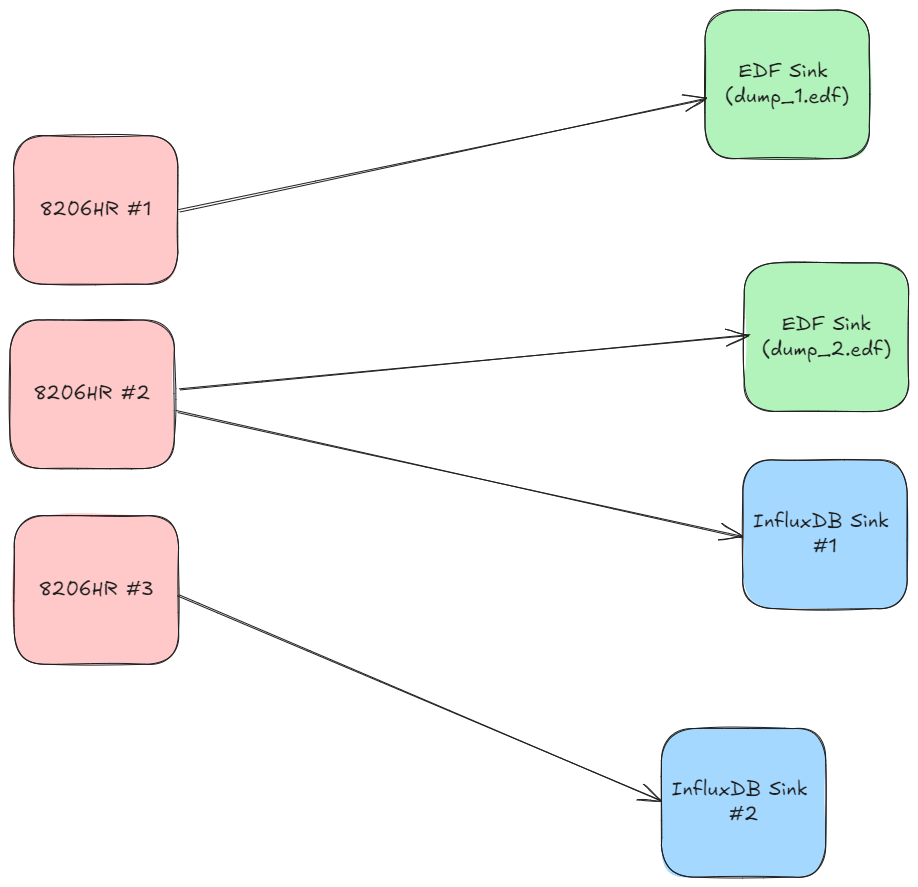

Streaming From Data Acquisition Systems 🤠
The 1000-Foot View 👀
Streaming in Morelia takes the form of defining and executing data-flow graphs. Each data-flow graph (in Morelia) consists of three parts:
A collection of data sources.
A collection of data sinks.
A mapping that defines the flow of data between sources and sinks.
Let’s expand on each of those concepts.
A data source (or more simply source) is anything that supplies POD data packets. For almost all use-cases, this will be a data aquisition device such as an 8206HR, 8401HR, or 8274D.
A data sink (oftentimes just called a sink), is a place to you want to send data. Some examples of this are EDF files, PVFS files, or even a time-series database like InfluxDB.
We then relate sources to sinks via a one-to-many mapping with following constraint: A source can map to many sinks, but a sink can only map to exactly one source. In more mathematical terms, it is an injective mapping.
To shed some more light on this, let us view an example data-flow graph.

This data flow graph streams data to both EDF files and InfluxDB. As you can see, each data source maps to one or more sinks, but each sink maps to only one source. We will use this diagram as a running example as we move into the next section.
Defining a Streaming Workflow 📐
Now, with the concepts out of the way it’s time to get our hands dirty in the code. Throughout this section, we will use the diagram at the end of the previous section as an example as we walk through how to setup a data-flow graph.
All streaming functionality is handled through the
Morelia.Stream subpackage. When streaming, the first step is to set up a data source. Great news, if you followed our Hitchhiker’s Guide to
Morelia, then you already know how to do this. Any acquisition device can function as data source, so go ahead and wire up
any devices you want in the API. As an example, let’s connect to three 8206HR devices,
# Import the proper class.
from Morelia.Devices import Pod8206HR
# Connect to an 8206HR devices on on /dev/ttyUSB0-2 and set the preamplifer gain to 10.
pod_1 = Pod8206HR('/dev/ttyUSB0', 10)
pod_2 = Pod8206HR('/dev/ttyUSB1', 10)
pod_3 = Pod8206HR('/dev/ttyUSB2', 10)
At this point, we may want to set a sample rate other than the default.
The sample rate of a device is acessible via to the sample_rate
attribute. Just like any attribute in Python, this can be
used to view the currenly set sample rate (in Hz) as well as change it.
It is worth noting, you will not be allowed to set a sample rate higher
than the maximum allowable for the device. The maximum allowable
sample rate is available via the max_sample_rate attribute.
As a quick example, if we wanted to set the sample rate of pod_2
to be 1300 Hz, we coud insert the following code:
# Import the proper class.
from Morelia.Devices import Pod8206HR
# Connect to an 8206HR devices on on /dev/ttyUSB0-2 and set the preamplifer gain to 10.
pod_1 = Pod8206HR('/dev/ttyUSB0', 10)
pod_2 = Pod8206HR('/dev/ttyUSB1', 10)
pod_3 = Pod8206HR('/dev/ttyUSB2', 10)
# Change the sample rate of pod_2 to be 1300 Hz.
pod_2.sample_rate = 1300
However, if we tried to set the sample rate of pod_2 to be 5000 Hz
(2000 Hz is the maximum allowable sample rate for an 8206HR),
this would raise a ValueError.
The next step is to initialize our data sinks, which can be imported from the
Morelia.Stream.sink subpackage. Currently, Morelia supports the following as
destinations to send data to:
Destination |
Class |
|---|---|
CSV File |
|
EDF File |
|
InfluxDB |
|
With plans for PVFS files in the near future. Depending on the sink, different parameters are passed in the constructors of those objects. For specific and extensive documentation, on the specific parameters of each sink, please see the documentation of Morelia.Stream.sink , we will not cover it here for the sake of brevity.
Continuing along with our example, let us build our sinks.
# Import the proper class.
from Morelia.Devices import Pod8206HR
from Morelia.Stream.sink import EDFSink, InfluxSink
# Connect to an 8206HR devices on on /dev/ttyUSB0-2 and set the preamplifer gain to 10.
pod_1 = Pod8206HR('/dev/ttyUSB0', 10)
pod_2 = Pod8206HR('/dev/ttyUSB1', 10)
pod_3 = Pod8206HR('/dev/ttyUSB2', 10)
# Change the sample rate of pod_2 to be 1300 Hz.
pod_2.sample_rate = 1300
# Create EDF sinks.
edf_dump_1 = EDFSink('dump_1.edf', pod_1)
edf_dump_2 = EDFSink('dump_2.edf', pod_2)
# Create InfluxDB Sinks.
influx_sink_1 = InfluxSink('influx.pinnaclet.com', 'supersecret', 'pinnacle', 'pinnacle', 'expirament1', pod_2)
influx_sink_2 = InfluxSink('influx.pinnaclet.com', 'supersecret', 'pinnacle', 'pinnacle', 'expirament1', pod_3)
Finally, it’s time to link them together with the mapping. We can do this using the
data_flow object from Morelia.Stream. In its constructor, the data_flow
object takes a single parameter, a list of tuples where each tuple contains an
acquisition device as the first element, and a list of sinks that said device maps
to as its second element. Instead of the headache of trying to parse that awful
sentence, let’s see what it looks like in our example.
# Import the proper class.
from Morelia.Devices import Pod8206HR
from Morelia.Stream.sink import EDFSink, InfluxSink
from Morelia.Stream import data_flow
# Connect to an 8206HR devices on on /dev/ttyUSB0-2 and set the preamplifer gain to 10.
pod_1 = Pod8206HR('/dev/ttyUSB0', 10)
pod_2 = Pod8206HR('/dev/ttyUSB1', 10)
pod_3 = Pod8206HR('/dev/ttyUSB2', 10)
# Change the sample rate of pod_2 to be 1300 Hz.
pod_2.sample_rate = 1300
# Create EDF sinks.
edf_dump_1 = EDFSink('dump_1.edf', pod_1)
edf_dump_2 = EDFSink('dump_2.edf', pod_2)
# Create InfluxDB sinks.
influx_sink_1 = InfluxSink('influx.pinnaclet.com', 'supersecret', 'pinnacle', 'pinnacle', 'expirament1', pod_2)
influx_sink_2 = InfluxSink('influx.pinnaclet.com', 'supersecret', 'pinnacle', 'pinnacle', 'expirament1', pod_3)
# List that defines how sources map to sinks.
mapping = [ (pod_1, [edf_dump_1]),
(pod_2, [edf_dump_2, influx_sink_1]),
(pod_3, [influx_sink_2])]
flowgraph = data_flow(mapping)
And presto, you are all ready to stream! In the next section, we will carry our example over and loop at how to start collecting data now that everything is in place.
Let the Data Flow! 🌊
This section will use the example from last section, so if you are just jumping in here, be sure to reference that first.
Once we’ve created our flow graph, we can start streaming! We can either stream data for a specific time interval, or whenever we tell it to stop.
Temporal Streaming ⏳
The first way to stream is for a particular duration of time, using data_flow’s collect_for_seconds method. This method takes one parameter, how many seconds to collect for,
and blocks until collection has finished. When run, this will execute the data-flow graph defined by data_flow, streaming data from sources to sinks. As a short example,
to collect for 5 minutes using our example from earlier.
flowgraph.collect_for_seconds(5*60)
Infinite Streaming 🌌
The other way to stream is for an undefined amount of time. To begin streaming, use data_flow’s collect method. This method takes no parameters and is non-blocking.
When you are ready to stop streaming, use the stop_collecting method. This behavior is also supported through context managers, where you can use a with statement to automatically start
and stop streaming. For example,
with flowgraph:
while True:
if flag:
break
# do other things if flag is not set...
can be used to stream until the flag variable is set to true at some other point in the code, and will automatically stop streaming once the with statement is left.
Making Your Own Sinks 📦
If you are an advanced power user, you may want to try your hand at making your own sink.
to create a custom sink, your class must be a subclass of SinkInterface and implement the interface.